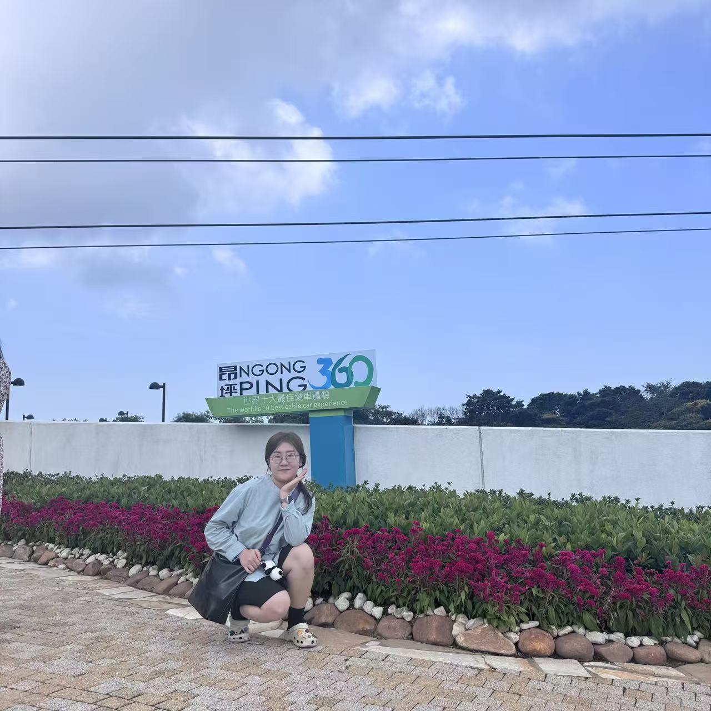
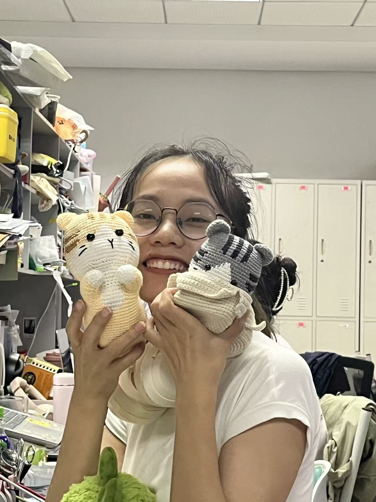
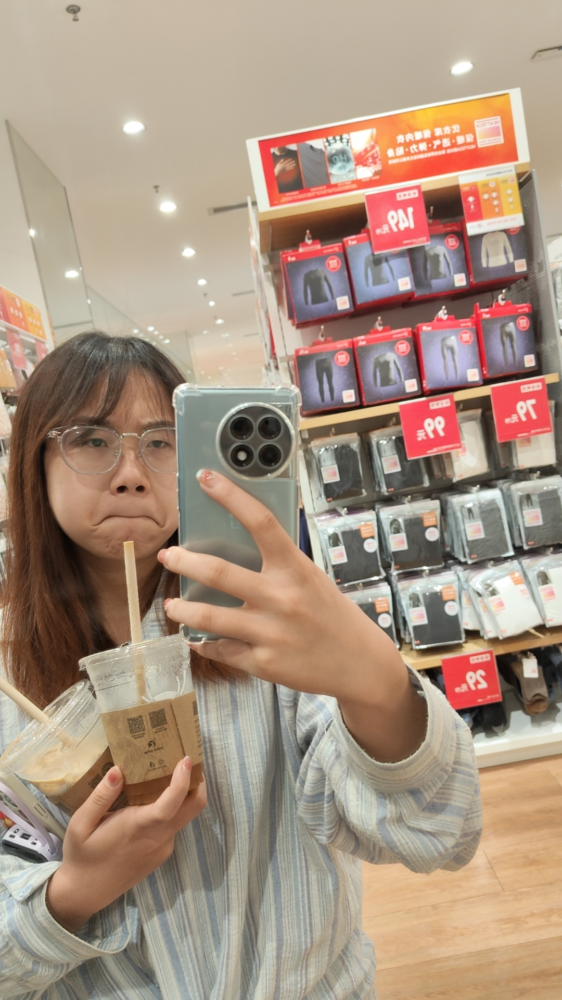
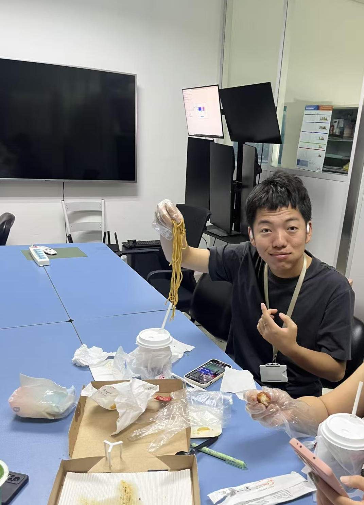

We are passionate scientists dedicated to advancing research in Developmental biology.
Principal Investigator
Research: Molecular Mechanisms of Embryonic Development、Genetic Variations in Major Birth Defects、Developmental Malformations
Jing Chen, Professor, Associate Director/PI of the Pediatric Surgery Research Lab at West China Hospital, Sichuan University. He graduated with a Ph.D. from Tsinghua University in 2017 and joined the Pediatric Surgery Research Lab at West China Hospital, Sichuan University in 2019, where he has held positions as Associate Researcher and later Researcher/Professor. Combining his expertise in genetic regulation of embryonic development, he aims to leverage the clinical case resources at West China Hospital to investigate the genetic variations and regulatory mechanisms of major birth defects and developmental malformations in China (such as congenital biliary atresia, congenital megacolon, congenital scoliosis, limb malformations, etc.) through a "clinical + basic" approach. The goal is to provide theoretical guidance for preventive screening, early diagnosis, and precision treatment of related birth defects and developmental malformations.

Lab Manager
Research: Bioinformatics、Epigenetics、Methods to improve the efficience of browsing xiaohongshu
Qianwen Zheng is the Lab Manager of CHENJ-Lab. She oversees daily lab operations, manages supplies and equipment, and ensures that research projects run smoothly and efficiently. In her free time, she enjoys browsing Xiaohongshu.

Research Assistant
Research: zebrafish
In her free time, she enjoys browsing Xiaohongshu.
Graduate Student
Research: east、west、north、south and all the directions
She is currently a PhD student at CHENJ Lab. In her free time, she enjoys studying intimate relationships between people, although she is not very skilled in this area. We all look forward to someone teaching her.

Graduate Student
Research: Limb Development
She is currently a PhD student at CHENJ Lab. In her free time, she enjoys playing mahjong

Undergraduate Student
Research: Limb Development
He joined CHENJ Lab in 2023, and he is the big handsome bro of CHENJ-Lab. In his free time, he enjoys playing badminton.